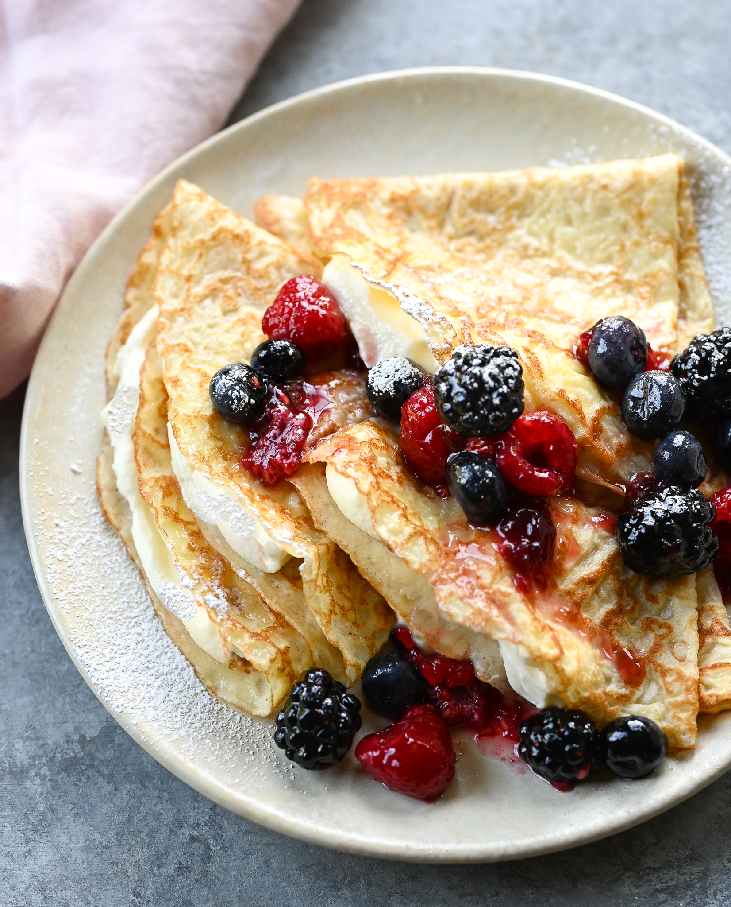

Crepes

Description
Crêpes are very thin French pancakes.
They can be served with a wide
variety of sweet and savory fillings
and toppings. The breakfast staple
dates back to at least 13th-century
France.
Crepes get their name from the Latin
word Crispus, meaning undulated and
crinkly or from the Greek word, Crispos,
which means wrapped or rolled up. They
are presented in a variety of ways.
Ingredients
- Flour: A cup of all-purpose flour.
- Eggs: Eggs act as a binder, which means
they help hold the batter together.
- Milk: Milk adds moisture and keeps the crêpes tender.
- Water: Water helps thin the batter.
- Salt: A pinch of salt enhances the overall flavor.
- Butter: Butter lends richness and moisture to the crêpes.
Steps
- Whisk the flour and eggs.
- Gradually add the milk and water.
- Scoop the batter onto a hot griddle.
- Cook until lightly browned on the bottom.
- Flip and continue cooking until done on both sides.